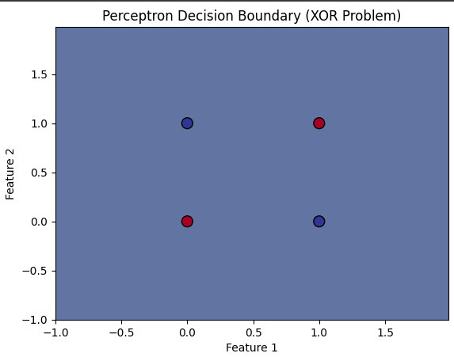

Perceptron
Introduction to Perceptron
The Perceptron is one of the simplest types of artificial neural networks, originally developed by Frank Rosenblatt in 1958. It is primarily used for binary classification tasks, where the goal is to classify inputs into one of two categories. The perceptron algorithm is based on a linear classifier, meaning it tries to separate data points into two classes using a hyperplane (or a line in 2D). While the perceptron is quite simple, it laid the foundation for more complex neural networks.
Perceptrons are supervised learning algorithms, meaning they learn from labeled data. During training, the model attempts to learn a decision boundary that best separates the two classes. It updates its weights iteratively based on the classification errors it makes. Despite its simplicity, the perceptron has limitations, especially when data is not linearly separable. However, it remains a foundational algorithm in machine learning and artificial intelligence.
Perceptron Model
The perceptron consists of an input layer, weights, a bias term, and an activation function. Here’s how it works:
- Inputs: These are the features or data points used by the model to make predictions. In a two-dimensional space, each input would be a pair of features.
- Weights: These are the parameters of the model that determine the importance of each feature in making the prediction. Weights are adjusted during training to minimize errors.
- Bias: The bias term helps shift the decision boundary and is essential for ensuring that the model can make correct predictions even when all the features are zero.
- Activation Function: The perceptron uses a step function as the activation function. If the weighted sum of the inputs exceeds a certain threshold (typically 0), the output is one class (e.g., 1); otherwise, it is the other class (e.g., 0).
Mathematically, the perceptron calculates the weighted sum of the inputs, adds the bias term, and passes the result through the activation function:
Output = Activation(Σ(weighti * inputi) + bias)
The result is a binary output indicating the predicted class label.
Working Mechanism of Perceptron

The perceptron algorithm works by adjusting weights during training to minimize errors. Here's how the process unfolds:
1. Data Collection
- Gather a labeled dataset with input features and corresponding class labels. Each input feature should have a known label (either 0 or 1, for binary classification).
- Ensure that the dataset includes representative examples for both classes. It is also important that the data is clean and free from missing values.
2. Data Preprocessing:
- Normalization: Feature normalization is essential when the data features have varying scales. Normalizing data ensures that the model treats all features equally, avoiding bias towards features with larger ranges.
- Feature Selection: Selecting only the most relevant features can improve the model’s efficiency. Irrelevant features can decrease the model’s performance and increase the complexity of learning.
3. Model Initialization:
The next step is to initialize the weights and the bias. This can be done randomly, but often small random values are chosen for weights and bias. The learning rate, a key parameter in the learning process, is also set at this point (usually between 0 and 1).
- The initial values of the weights and bias have no special meaning, but they play a crucial role in model convergence.
- The learning rate determines how large the adjustments to the weights will be after each iteration. A small learning rate ensures gradual convergence but might be slow, while a large learning rate can lead to overshooting the optimal weights.
4. Training the Model
The perceptron algorithm trains iteratively. The model computes the weighted sum of the inputs, applies the activation function, and compares the predicted output with the true label. The weights are then adjusted based on the error.
- Forward Pass: Compute the weighted sum of inputs and pass the result through the activation function to obtain the model's prediction.
- Activation: If the result from the weighted sum is above a certain threshold (usually 0), the output is 1 (class 1); otherwise, it is 0 (class 0).
- Backward Pass (Learning Rule): If the prediction is wrong, the weights are updated using the perceptron learning rule:
- New Weight: weighti = weighti + learning_rate * (true_label - predicted_label) * inputi
5. Model Evaluation:
- Accuracy: After training, the model’s performance can be evaluated by testing it on unseen data. The accuracy is computed as the percentage of correct predictions.
- Loss Function: The perceptron uses a simple loss function, which is the error between the true label and the predicted label. The learning process tries to minimize this error.
- Convergence: The perceptron converges when it reaches an optimal set of weights where all data points are correctly classified, or it reaches a predefined number of iterations.
Advantages of Perceptron
- Simple and Fast: The perceptron is computationally efficient and easy to implement, making it an ideal starting point for machine learning tasks.
- Easy to Interpret: The perceptron provides clear decision boundaries and its functioning is easy to understand.
- Effective for Linearly Separable Data: When data can be separated by a linear decision boundary, the perceptron converges quickly and performs well.
Disadvantages of Perceptron
- Limited to Linearly Separable Data: One of the major drawbacks is that the perceptron cannot solve problems that are not linearly separable, such as XOR.
- No Probabilistic Interpretation: The perceptron lacks the ability to provide probabilistic outputs like logistic regression, which makes it less useful for tasks that require uncertainty estimation.
- Sensitive to Learning Rate: Choosing an inappropriate learning rate can result in slow convergence or failure to converge.
Sample Code Example
Simple Perceptron Model Implementation and Visualization for XOR Problem
import numpy as np
import matplotlib.pyplot as plt
from sklearn.linear_model import Perceptron
# XOR input data
X = np.array([[0, 0], [0, 1], [1, 0], [1, 1]])
y = np.array([0, 1, 1, 0]) # XOR output
# Create the perceptron model
model = Perceptron(max_iter=1000, eta0=0.1)
# Fit the model
model.fit(X, y)
# Make predictions
y_pred = model.predict(X)
# Plotting the decision boundary
h = .02 # Step size in the mesh
# Create a meshgrid to plot decision boundaries
x_min, x_max = X[:, 0].min() - 1, X[:, 0].max() + 1
y_min, y_max = X[:, 1].min() - 1, X[:, 1].max() + 1
xx, yy = np.meshgrid(np.arange(x_min, x_max, h),
np.arange(y_min, y_max, h))
# Get decision boundary prediction for each point in the mesh
Z = model.predict(np.c_[xx.ravel(), yy.ravel()])
Z = Z.reshape(xx.shape)
# Plot the contour and the points
plt.contourf(xx, yy, Z, alpha=0.8)
plt.scatter(X[:, 0], X[:, 1], c=y, s=100, edgecolors='k', marker='o', cmap=plt.cm.RdYlBu)
plt.title('Perceptron Decision Boundary (XOR Problem)')
plt.xlabel('Feature 1')
plt.ylabel('Feature 2')
plt.show()
Output:
